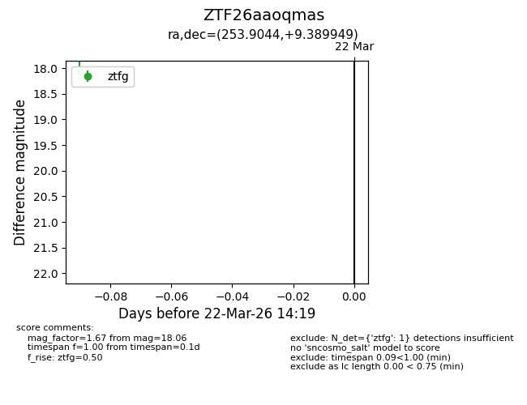
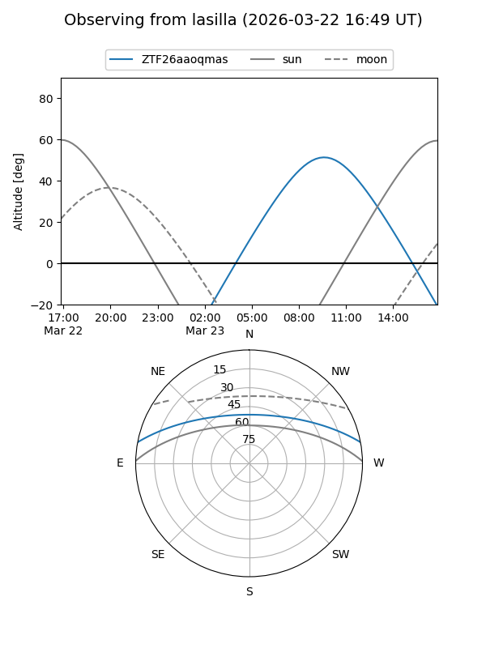
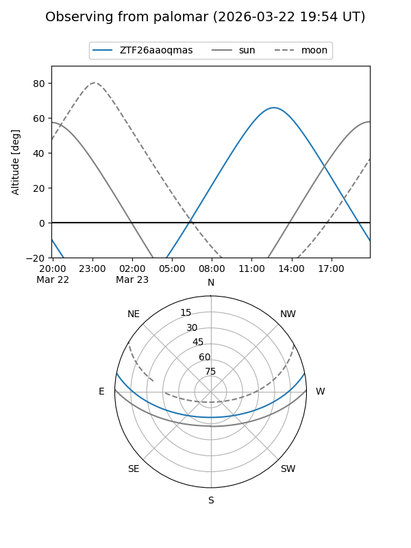

ZTF26aaoqmas
Target ZTF26aaoqmas at 2026-03-22 14:21
Aliases and brokers:
FINK: link
Lasair: link
ALeRCE: link
alt names
ZTF26aaoqmas (ztf,fink_ztf)
Coordinates:
equatorial (ra, dec) = 253.9044,+9.38995
equatorial (HMS+DMS) = 16:55:37.06,+09:23:23.81
galactic (l, b) = (28.1254,+29.96599)
Flags:
Photometry:
last ztfg=18.06
1 ztfg detections
Lightcurve

Visibility


Additional plots